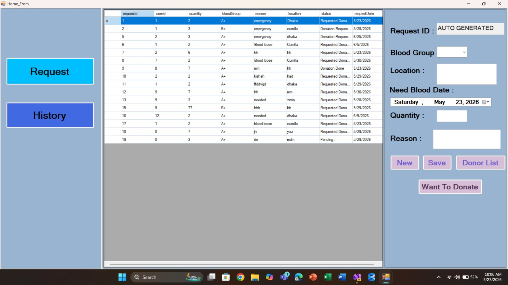
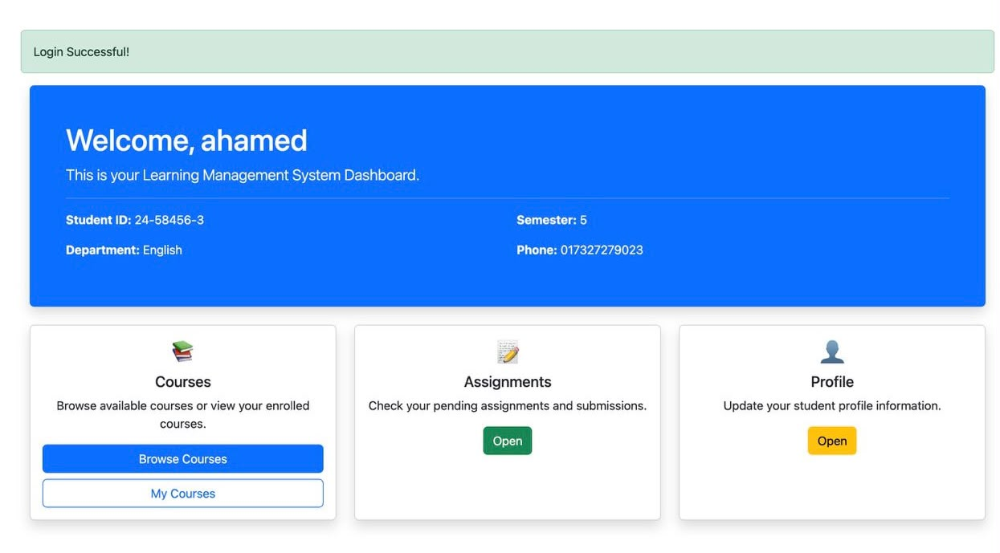

Blood and donor management system
The Blood and Donor Management System is a C# desktop application created with Windows Forms (.NET) to make
blood donation activities more organized and accessible.
It allows users to submit blood needs, monitor ongoing requests, and review previously submitted records.
Each request contains essential information, including blood type, amount needed, location, purpose, submission
date, and current progress.
A user-friendly interface enables users to enter and store request details.
Additionally, users can browse available donors or register their willingness to donate blood, helping connect
people in need with potential donors.
C#, MySQL, Visual Studio

Learning Management System
Learning Management System (LMS) is a web-based application developed to help students and teachers manage
academic activities easily.
We used Python as the programming language, Django as the web framework and HTML to design web pages.
The system allows teachers to upload assignments, review student submissions, and provide feedback, while
students can view and submit assignments.
The database stores user information, assignment details, submissions, and feedback. Our main goal is to reduce
paperwork and improve communication between students and teachers.
Python, Django, HTML

Hospital Management System
Omuk Hospital Management System is a desktop application developed using Java and Java Swing.
It provides a user-friendly interface to view hospital departments, book appointments, view existing
appointments, and clear all appointment records.
The system includes departments such as Cardiology, Nephrology, and Neurology. It also validates patient
information and checks for duplicate appointment time slots.
Appointment details are stored in a text file for future reference.
Java, Java Swing, Notepad++, Text File (.txt)